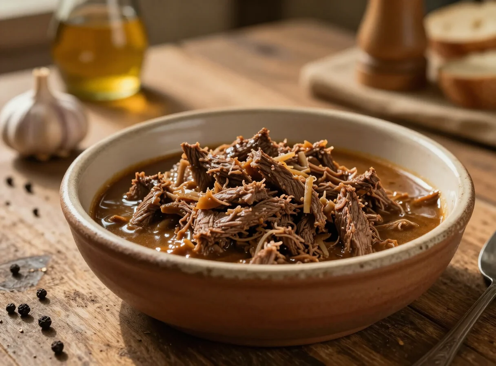

Caderno de receitas
Receitas com o nosso molho
Pratos rápidos, saborosos e com jeito de comida caseira. Nosso caderno de receitas está sendo preparado com o mesmo cuidado do nosso molho.
Receitas em breve
Estamos cadastrando as receitas que vão acompanhar o Paladar da Estância. Volte em breve para descobrir formas deliciosas de aproveitar o nosso molho pronto.

Como vão ser as receitas
- Rápidas
- Prontas em minutos.
- Versáteis
- Para todas as refeições.
- Caseiras
- Sabor de estância.